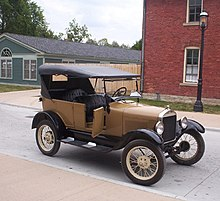
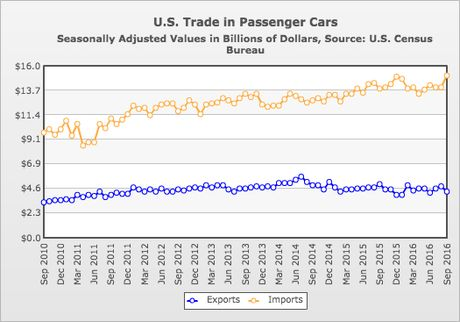

The automotive industry in the United States began in the 1890s and, as a result of the size of the domestic market and the use of mass production, rapidly evolved into the largest in the world. The United States was the first country in the world to have a mass market for vehicle production and sales and is a pioneer of the automotive industry and mass market production process. During the course of the 20th century global competitors emerged especially in the second half of the century primarily across European and Asian markets, such as Germany, France, Italy, Japan and South Korea. The U.S. is currently second among the largest manufacturer(s) in the world by volume.
American manufacturers produce approximately 10 million units annually. Notable exceptions were 5.7 million automobiles manufactured in 2009 (due to crisis), and more recently 8.8 million units in 2020 due to the global COVID-19 pandemic. While production peaked during the 1970s and early 2000s at levels of 13–15 million units.
The development of self-powered vehicles was accompanied by numerous technologies and components giving rise to numerous supplier firms and associated industries. Various types of energy sources were employed by early automobiles including steam, electric, and gasoline. Thousands of entrepreneurs were involved in developing, assembling, and marketing of early automobles on a small and local scale. Increasing sales facilitated production on a larger scale in factories with broader market distribution. Ransom E. Olds and Thomas B. Jeffery began mass production of their automobiles. Henry Ford focused on producing an automobile that many middle class Americans could afford.